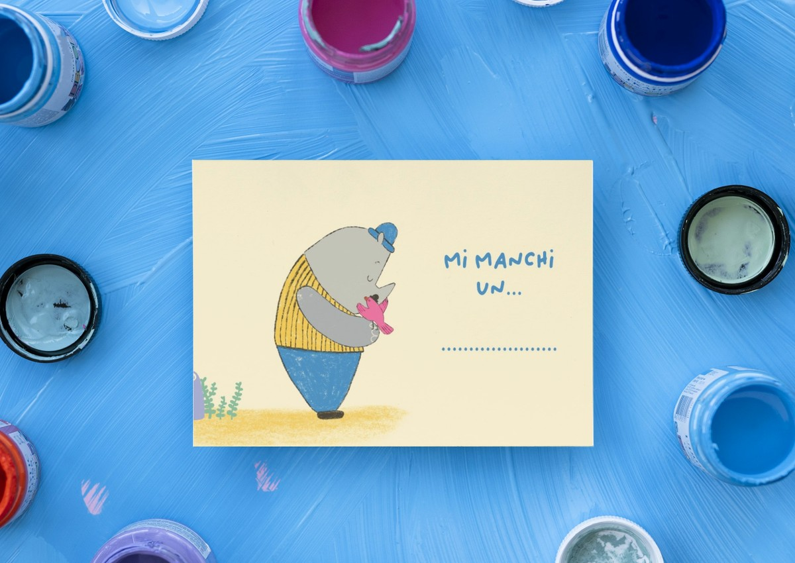

Mi manchi una balena
Una cartolina ispirata a Mi manchi una balena. Puoi stamparla, scrivere un pensiero sul retro e regalarla a qualcuno a cui vuoi bene.
Qui trovi attività, cartoline, giochi e piccoli materiali ispirati ai miei libri. Puoi scaricarli gratuitamente, stamparli e usarli a casa, a scuola, in biblioteca o dove le storie continuano a vivere.

Una cartolina ispirata a Mi manchi una balena. Puoi stamparla, scrivere un pensiero sul retro e regalarla a qualcuno a cui vuoi bene.

Un biglietto da stampare e lasciare tra le pagine di un libro. Per regalare a chi lo troverà una parola gentile, un pensiero o un piccolo disegno. Nati pensando a Lukas, ma pronti a viaggiare in qualunque libro.
Questa raccolta crescerà insieme alle storie. Ogni tanto comparirà un nuovo piccolo regalo da stampare, usare o lasciare in viaggio.